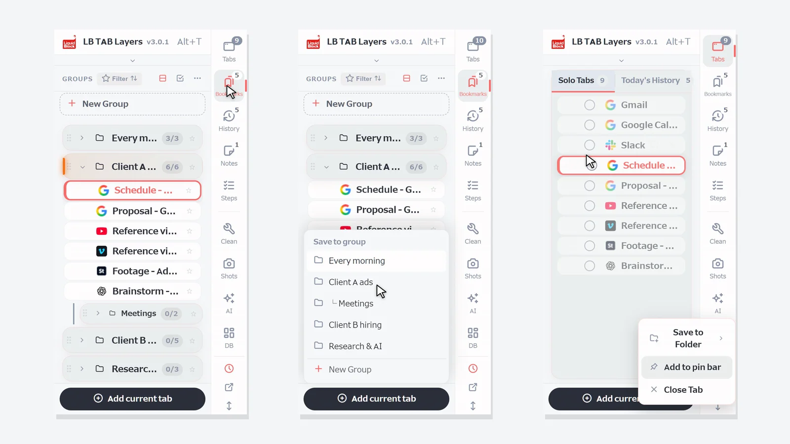
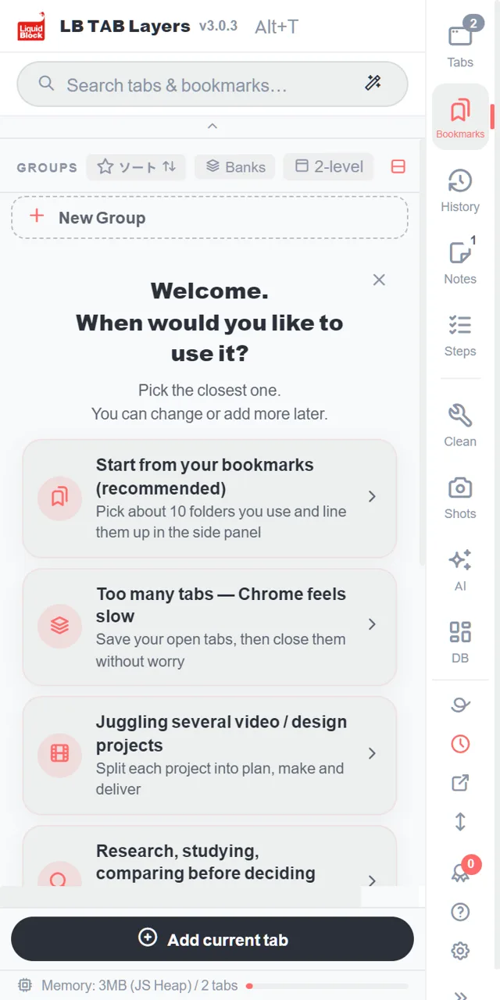
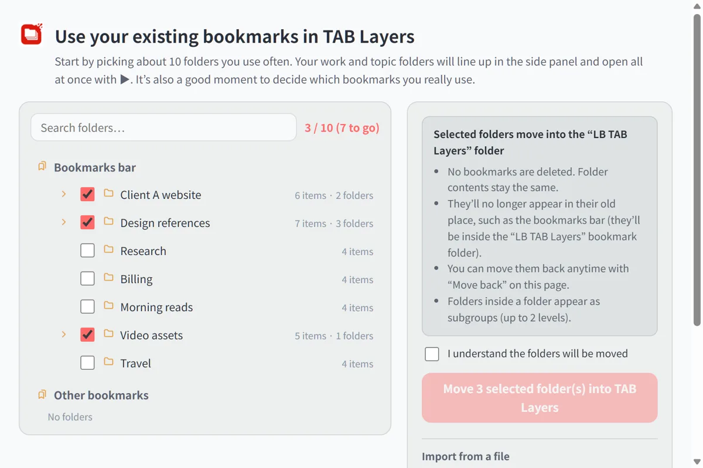
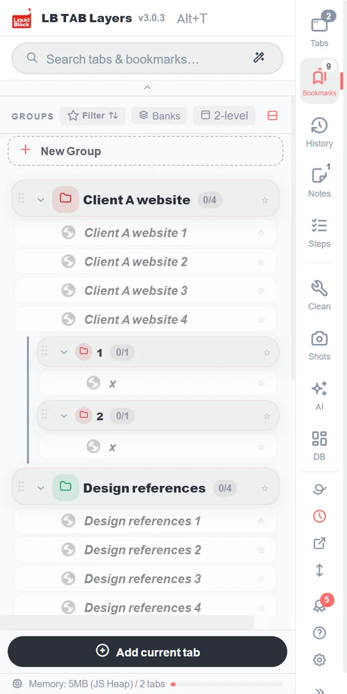
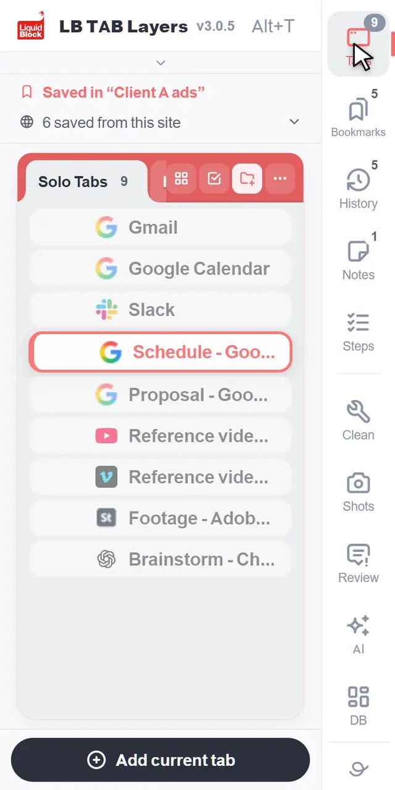
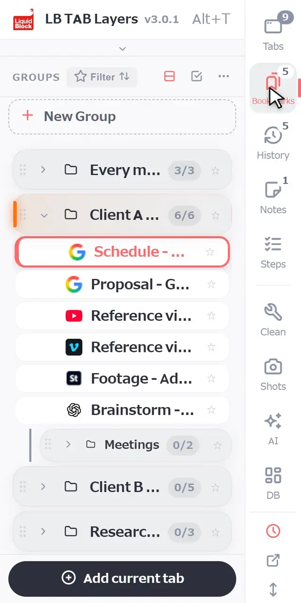
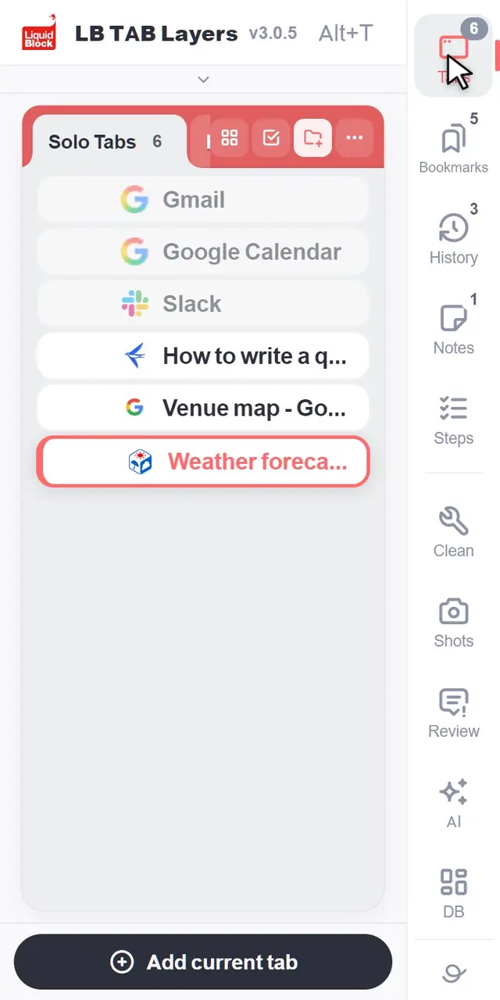
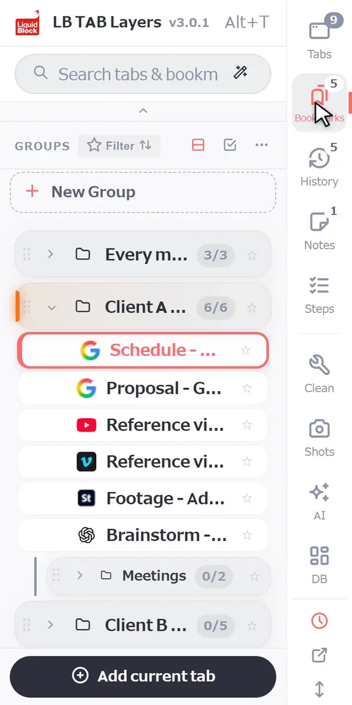

Press Alt+T (Option+T on a Mac) to open LB TAB Layers. There are only three things to learn first: save the tab you are on with Add current tab, open a whole group with ▶, and close it again with ■. Everything you save is kept as Chrome bookmarks, so it stays there after you close the tabs or restart Chrome.
Thank you for installing LB TAB Layers. This page covers only what you need in your first five minutes.
The idea is simple. Tabs are “now”: what you are working on. Bookmarks are “later”: what you will come back to. Today’s history is the “record” of what you looked at. LB TAB Layers lets you move between all three in one side panel.
💡 Press Alt+T (Option+T on a Mac) to open it at any time. You can also click the LB TAB Layers icon in the toolbar. If you cannot see the icon, click the puzzle-piece icon and pin LB TAB Layers.
First: bring your existing bookmarks into TAB Layers (recommended)
If you already have bookmark folders in Chrome, bringing them into TAB Layers first is the fastest way to start. You do not have to build new groups: the folders you already have become groups for each job or topic, lined up in the side panel.
Click “Start from your bookmarks (recommended)”
It is at the very top of the welcome screen you see right after installing. You can also open it later from Settings → Data → Bookmarks, or with “Import bookmarks” at the top of the large-screen dashboard.

Pick the folders you use most (about 10 to start)
Your Chrome bookmark folders are listed. Tick the ones you use often. A counter such as “3 / 10” shows how many you have picked. You do not need all of them, and it is a good chance to think about which bookmarks you really use.

Tick “I understand the folders will be moved” and move them
The folders move into the “LB TAB Layers” folder inside your Chrome bookmarks. Nothing is deleted, and the contents stay the same. They will no longer appear in their old place (such as the bookmarks bar), but you can bring them back anytime with “Move back” on the same page.
They appear as groups in the side panel
Each folder becomes a group, and folders inside it become subgroups. Click a group’s ▶ to open all of its pages at once.

1. Finding your way around
A column of buttons runs down the edge of the panel: Tabs, Bookmarks, History, Notes and Steps. Click one to switch to that view. The small numbers show how many tabs are open, how many groups you have, and so on.
- Tabs — the tabs you have open right now that are not saved anywhere yet
- Bookmarks — the tabs you have saved, gathered into groups, one per project
- History — the pages you visited today, including the ones you did not save
- Notes and Steps — notes for your work and step-by-step checklists
Below the divider are tools (Clean, Shots, AI and DB). You do not need them on day one.

2. The basics
Create a group
In the Bookmarks view, click + New Group at the top of the list. Name it after a piece of work, such as “Client C site” or “Every morning”. One group per project works best.

Save the tab you are on
Click Add current tab at the bottom of the panel and choose a group. Groups that already have the page are marked Saved.

Save several open tabs at once
In the Tabs view, click the circle to the left of a tab to start selecting. Click the circles of the other tabs you want, then click To group at the bottom and choose a group. You can also drag tabs onto a group one at a time.

Open everything with ▶, close everything with ■
Hover over a group and click ▶ to open all of its tabs. They open together as a Chrome tab group with the same name and color as your group. When you are done, click ■ to close that tab group in one go. Your saved tabs stay saved.

Search
Type in the search box at the top to look through your open tabs, your saved tabs and today’s history together. Small typos are fine.

3. A simple way to manage your work
One group for each project
Think of a group as a desk for one piece of work. A whole day can run on this:
- In the morning — click ▶ on today’s project and pick up where you left off
- When you switch work — close the current project with ■ and open the next one with ▶
- At the end of the day — just click ■. Tomorrow, ▶ brings it all back
Put the sites you use every day on the pin bar
For sites you open every day, such as email or your calendar, right-click a tab or bookmark and choose Add to pin bar. They sit as small icons at the top of the panel and open with one click (up to 12). You can also drag them there.
Give each project its own window
Right-click a group and choose Open in new window to open it as a tab group in a separate window. This is handy when you work on two things side by side, or on a second monitor.
Forgot to save something? Today’s history has it
You do not have to save everything. Pages you did not save are still in History, listed in the order you visited them today. Save what matters to a group and close the rest; that is usually all you need.
Want to see more? The guide shows ten everyday actions, recorded with the browser and the side panel side by side.
🔒 Everything you save is kept as Chrome bookmarks. Your saved tabs stay there after you close them or restart Chrome, and LB TAB Layers does not send your bookmarks anywhere. Data kept inside the extension, such as notes, can be exported from Settings.
Frequently asked questions
Q. How do I open LB TAB Layers?
Press Alt+T on your keyboard (Option+T on a Mac). You can also click the LB TAB Layers icon in the toolbar.
Q. If I uninstall the extension, do my saved tabs disappear?
No. Saved tabs stay in your Chrome bookmarks, in folders with the same names as your groups. Data kept inside the extension, such as notes, is removed, so export it from Settings first.
Q. What does the search box look through?
Your open tabs, the tabs saved in your groups, and today’s history, all at once.
Q. Is it free?
Yes. The free version lets you create up to 5 groups. Today’s history, Steps, the dashboard and AI search are PRO features, and every feature is available for 90 days after you install.
▶ See it in action
Managing bookmarks and tabs together in the sidebar. (The video shows the Japanese UI.)
Start with one project.
Open with Alt+T, save the tab you are on, open with ▶ and close with ■. No account needed · Saved as Chrome bookmarks · Every feature free for 90 days
Add to Chrome — it's free →